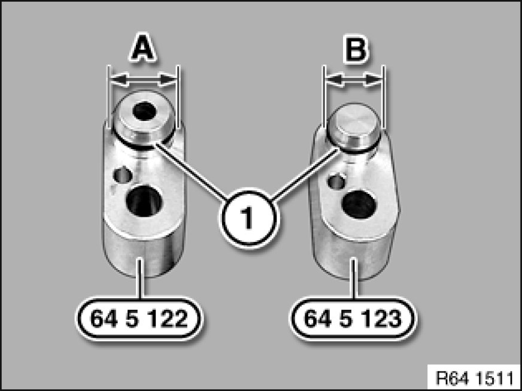
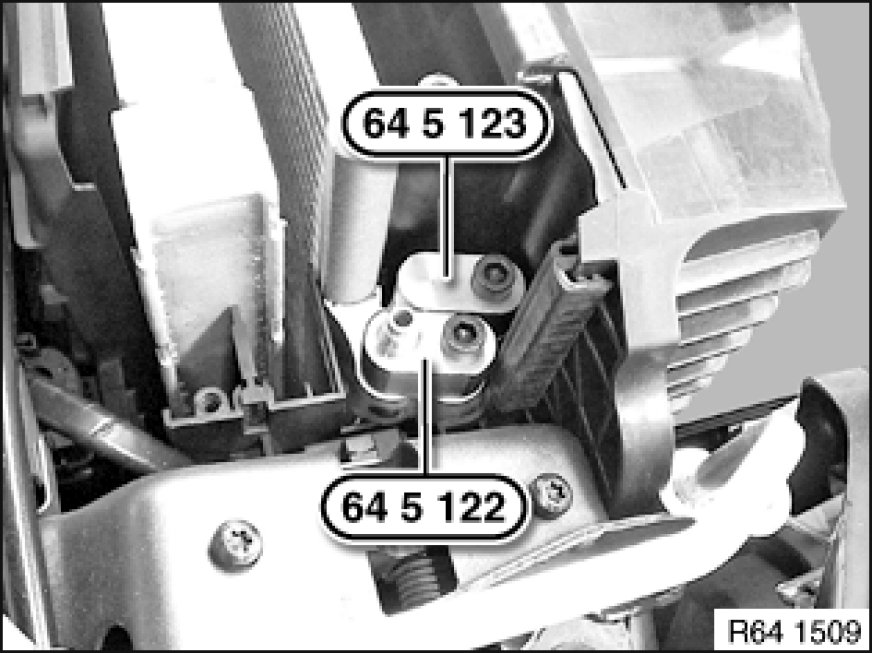
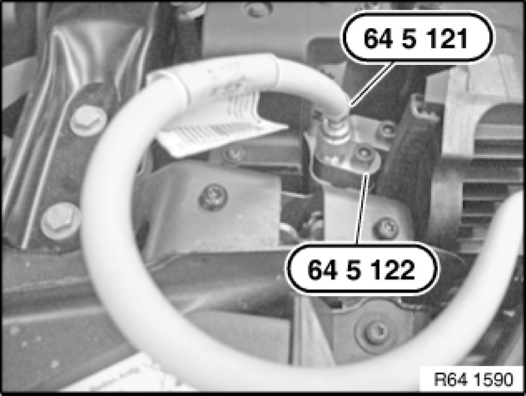

Leak-Testing Condenser
64 51 ... - Leak-testing condenser

Special tools required:
- 64 5 121 64 5 120 Test Adapter Set, A/C Components
- 64 5 122 64 5 120 Test Adapter Set, A/C Components
- 64 5 123 64 5 120 Test Adapter Set, A/C Components

Warning!
Risk of injury!
Refrigerant circuit is under high pressure!
Follow safety instructions for handling refrigerant Safety Instructions for Handling Refrigerant R 134a
Comply with the standard national safety instructions and precautions on handling nitrogen.
Ensure that employees are advised of how to handle pressurized vessels and nitrogen correctly (danger of asphyxiation). For this purpose, follow the notes and instructions in the technical safety specifications available from the gas supplier.

Necessary preliminary tasks:
- Drain off air conditioner Drawing off, Evacuating and Filling A/C System (R 134a)
- Detach refrigerant lines from condenser
Tightening torque 64 53 6AZ [1][2]Expansion Valve.
E70 only:
Tightening torque 64 53 3AZ.

Important!
Risk of damage!
Special tool 64 5 122 64 5 120 Test Adapter Set, A/C Components and special tool 64 5 123 64 5 120 Test Adapter Set, A/C Components have different diameters (A, B) at the seal plugs!
Ensure correct connection assignment on condenser.
Replace sealing rings (1) prior to each use.

Fit and secure sealing adapter 64 5 123 64 5 120 Test Adapter Set, A/C Components to connection of low-pressure line.
Fit and secure test adapter 64 5 122 64 5 120 Test Adapter Set, A/C Components to connection of low-pressure line.
Tightening torque 64 53 6AZ [1][2]Expansion Valve.
E70 only:
Tightening torque 64 53 3AZ.

Connect special tool 64 5 122 64 5 120 Test Adapter Set, A/C Components to special tool 64 5 121 64 5 120 Test Adapter Set, A/C Components.

Important!
Risk of damage: Use only nitrogen pressure bottles with pressure reducers for leak-testing.
Pressurize condenser to 10 bar slowly only. Excessively fast pressurization and pressures in excess of 20 bar may cause damage to the condenser.

Connect nitrogen pressure bottle with pressure reducer to pressure gauge and then connect to special tool 64 5 121 64 5 120 Test Adapter Set, A/C Components (connecting hose).
Note:
- Testing apparatus must be leakproof.
- Ambient temperature and temperature of vehicle must not change during the test procedure.
- Do not move the vehicle during this period
Apply test pressure of 10 bar slowly and close nitrogen pressure bottle.
Check leak-tightness of testing apparatus and of connection to refrigerant line.
Set test pressure of 10 bar is only permitted to drop by 2 bar to 8.5 bar over a test period of 1.5 hours.
If the pressure loss is greater than 1.5 bar, this indicates that there is a leak in the condenser unit.
Warning!
After leak-testing, unscrew special tool 64 5 121 64 5 120 Test Adapter Set, A/C Components slowly from special tool 64 5 122 64 5 120 Test Adapter Set, A/C Components to reduce pressure.
After leak-testing:
- Replace all sealing rings and moisten with refrigerant oil
- Assemble A/C system
- Evacuate and fill A/C system